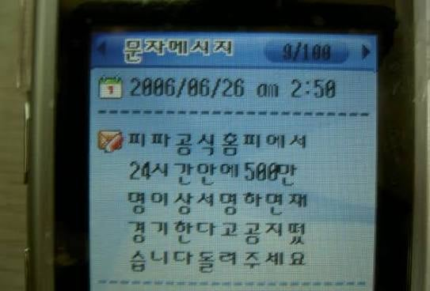

Trên trang web chính thức của FIFA có thông báo rằng nếu trong vòng 24 giờ có hơn 500.000 người ký tên, trận đấu sẽ được tổ chức lại. Hãy chuyển tiếp tin nhắn này.
1억이니까 500만 금방 채우겠지?

Trên trang web chính thức của FIFA có thông báo rằng nếu trong vòng 24 giờ có hơn 500.000 người ký tên, trận đấu sẽ được tổ chức lại. Hãy chuyển tiếp tin nhắn này.
1억이니까 500만 금방 채우겠지?
ㅇㅇ150만명인가 넘겼다던데ㅋㅋㅋ진짜 150만명 모은건지 허수인지 모르겠지만
보고있으면 쟤네 생각수준이 60~70년대 한국같아
아이씨... 아는거 나와서 속상하다...
이미 하고 있음 ㅋㅋㅋ